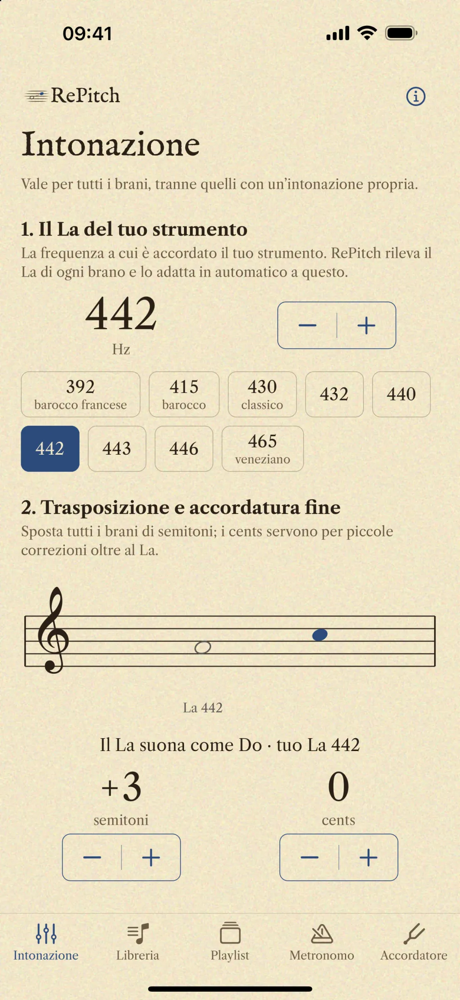
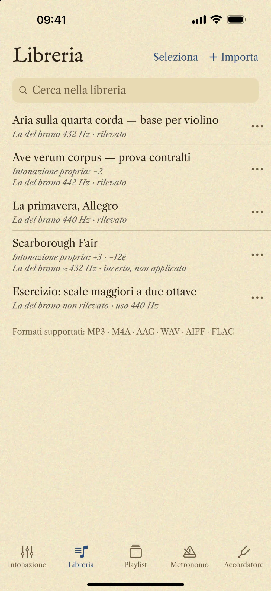
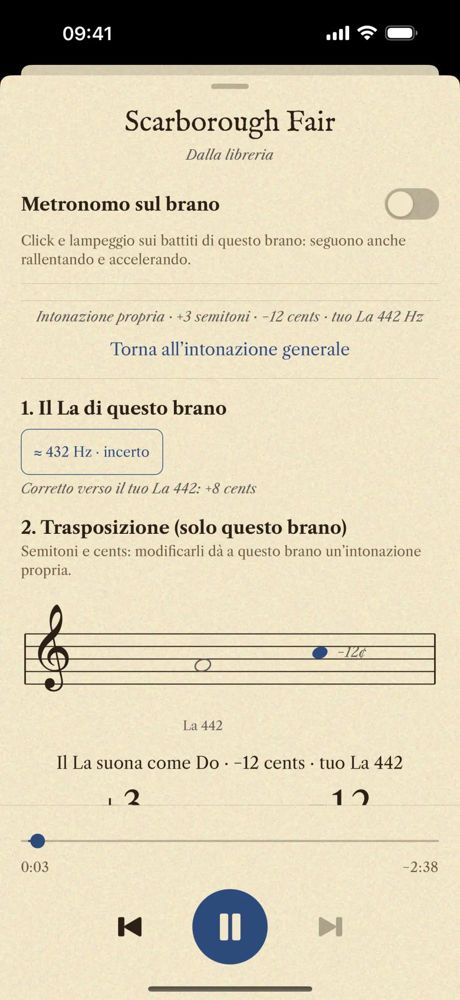

Il tuo La
Scegli il La del tuo strumento, da 392 a 465 Hz un hertz alla volta: 415 per il barocco, 432, 440, 442, 443. Vale per tutti i brani, insieme alla trasposizione in semitoni e all’accordatura fine in cents.
RePitch cambia l’intonazione dei tuoi brani in tempo reale, senza toccare il tempo. Imposti il La del tuo strumento, lui rileva quello di ogni brano e li mette d’accordo.

A 415 Hz suona il barocco, a 440 l’orchestra moderna. RePitch porta ogni registrazione al La che scegli tu.
Scegli il La del tuo strumento, da 392 a 465 Hz un hertz alla volta: 415 per il barocco, 432, 440, 442, 443. Vale per tutti i brani, insieme alla trasposizione in semitoni e all’accordatura fine in cents.

La del brano 441 Hz · rilevato
Ogni registrazione ha un’accordatura sua. RePitch ne rileva il La, senza che tu debba cercarlo, e calcola da sé la differenza che separa il brano dal tuo strumento.
Se un brano chiede un’intonazione diversa, aprilo nel player e dagli semitoni e cents tutti suoi. Gli altri brani restano sull’intonazione generale, e quello lo ritrovi così alla prossima apertura.

Gratuita. Senza account. Senza pubblicità. Funziona offline. Non raccoglie nessun dato.
I tuoi brani restano sul tuo dispositivo. Leggi la privacy
RePitch è gratuita e sviluppata in modo indipendente. Se ti è utile nello studio, puoi sostenerne lo sviluppo con una donazione libera.
Dona con PayPalGrazie: ogni contributo va nel tempo dedicato a RePitch.